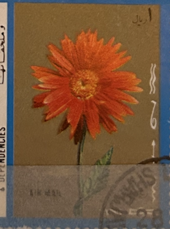
| SOURCE | TITLE| IMAGE MATCH | click to source page |
| I found in my yard today a very interesting azalea flower , a part was pink | 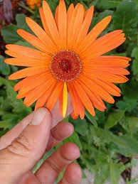 | |
| Costa Farms | Gerbera Daisy – Costa Farms | 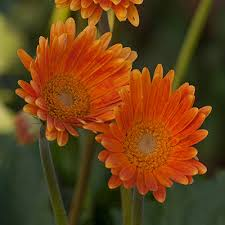 |
| mdweil.com | Flowers of the World- US | 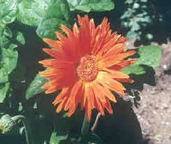 |
| Depending on maturity and species, the height of Gerbera daisies is about 8 to 24 inches. However, these plants are grown annually but in the U.S. Department of Agricultural Plant Hardiness zone | 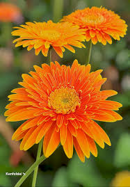 | |
| flowersluxe.com | Gerbera Meaning & Symbolism | FlowersLuxe | FlowersLuxe | 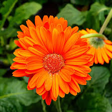 |
| Seed Fella | Orange Marguerite Flower seeds for Planting - Fragrant Bloss | 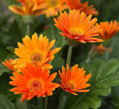 |
| Green Acres Nursery & Supply | Gerbera Daisy — Green Acres Nursery & Supply | 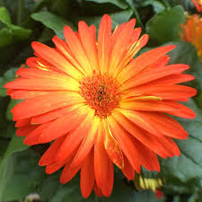 |
| Just noticed this heart in the center of my daisy I grew. So subtle but so powerful. Love is everywhere, pay attention or you might miss it! "We might think we are | 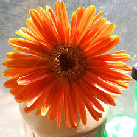 | |
| Pixies Gardens | Gerbera Garvinea Sweet Glow Perennial Gerber Daisy buy online plants and trees at pixies Gardens. | 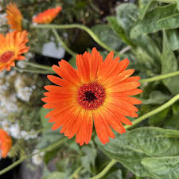 |
| Gerber daisy with yellow and orange petals in zone 9a | 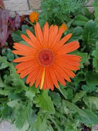 | |
| Goodreads | Sexual Intellectual Female by Regina G. Hanson | Goodreads | 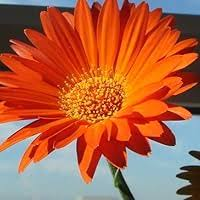 |
| X | the hurt moth i saw last friday i almost cried while walking 😢 | 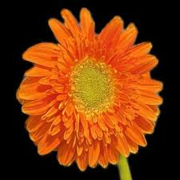 |
| Wikimedia.org | File:Bright orange flower.jpg - Wikimedia Commons | 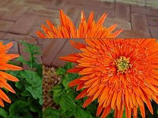 |
| Calendula flower . Ramna nursery , Dhaka . 17th August 2024 . | 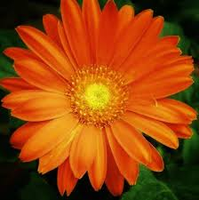 | |
| Threads | Orange Gerbera daisies make me want to plant even more fall colors. 🍂🧡 | 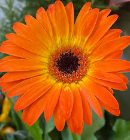 |
| Greenhouse Grower | Plants That Can Survive Hot Climates - Greenhouse Grower | 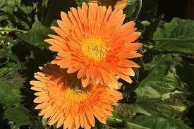 |
| Flickr | orange bright | kathid67 | Flickr | 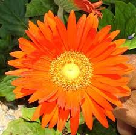 |
| Garden Guides | What Are The Treatments For Bugs On Gerbera Daisies? | 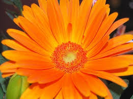 |
| Flower Power! Huntsville, Al. | 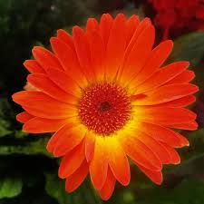 | |
| Summer in Montana USA be like… | 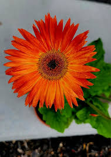 | |
| 🌺 Anthurium perfection is here! 🌿 These elegant blooms are now available to elevate your arrangements with their distinct charm and tropical flair. 💐✨ Perfect for bouquets, centerpieces, or as standalone beauties, | 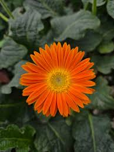 | |
| chittappan #eveninglight #canon #canonphotography #canon_photos #canon800d #photographer #photooftheday #photography #cousin #cousins | 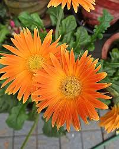 | |
| Ziedot.lv | Donors « Palīdzība Rebekai Zāģerei « Completed projects - ziedot.lv | 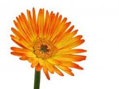 |
| B'ful "Transvaal Daisy" plant and blooms 🌿❤️🌸 'Gerbera' is a genus of plants in the 'Asteraceae' family. Are tufted, caulescent perennial herbs, often with a woolly crown, up to 80 cm high. | 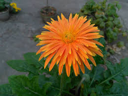 | |
| douglasferris.com | Cape Cod Flowers photos by Doug Ferris generated by VisualSlideshow.com | 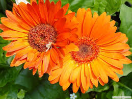 |
| Even in the dead of winter The crocus bloom.... The wilderness and the dry land shall be glad; the desert shall rejoice and blossom like the crocus; Isaiah 35:1 Like our mind | 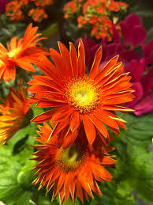 | |
| Dreamstime.com | Single Orange Chrysanthemum (gerbera) Isolated on White Background Stock Image - Image of isolated, flower: 58167029 | 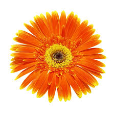 |
| Beacon Motel | Services – Beacon Motel | 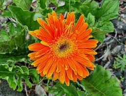 |
| Can I suggest non-toxic bug repellents for Alzheimer's care? | 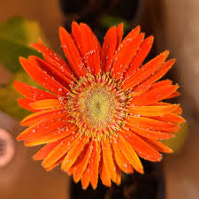 | |
| Adobe | Wet Gerbera" Images – Browse 8 Stock Photos, Vectors, and Video | Adobe Stock | 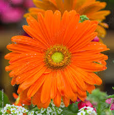 |
| Picked this up today. Excited to add to my growing collection | 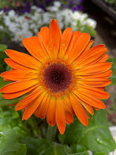 | |
| latebloomersdesigns.com | Fire Star Orchids 2, Hillwood Estate and Gardens - Late Bloomers Designs | 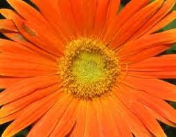 |
| ArtWanted.com | John Cudworth | Portfolio Gallery | ArtWanted.com | 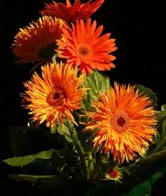 |
| Wikimedia.org | File:Gerbera1.jpg - Wikimedia Commons | 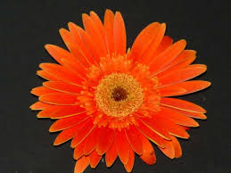 |
| Donna Slaughter - owner at Photos by Donna | LinkedIn | 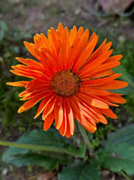 | |
| Amcor | Tufflite Plastic Greenhouse Film | Berry Global | 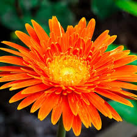 |
| iStock | Gerbera Flower Painting Watercolor Stock Illustration - Download Image Now - Art, Black Color, Creativity - iStock | |
| 民都鲁宠物买卖与宠物领养| Facebook | 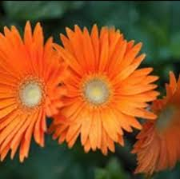 | |
| Calendula Botanicals | About Us – Calendula Botanicals | 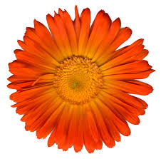 |
| Flickr | double beauty | shot at my neighbor's garden my neighbor inv… | Flickr | 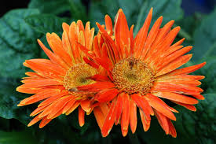 |
| DepositPhotos | Flower — Stock Photo © skywing #17107221 | 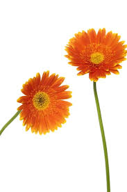 |
| Parkhill Junior School | Vocabulary | 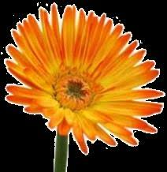 |
| Gerbera VietNam 17/05/2024 Canon 750D | 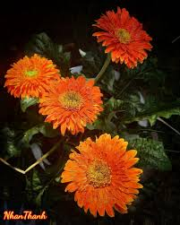 | |
| Sharal ♡ (@with_sharal) • Instagram photos and videos | 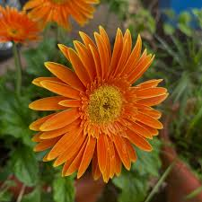 | |
| Sakata Ornamentals | Majorette - Sakata Ornamentals | 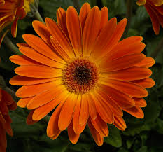 |
| Etsy | Dried Pressed Flower Gerbera - Etsy | 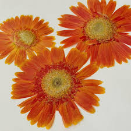 |
| Lemon8 | Creative Goal Setting: Write Your Aspirations on Champagne Bottles | 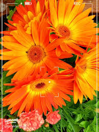 |
| Shutterstock | Unique Joined Stamen Gerbera Daisy Abstract Stock Photo 432639538 | Shutterstock | 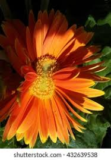 |
| IN.gov | Floral Displays Lakeside Garden Lakeside Garden FFoosstteerr GG aarrddeennss FFoosstteerr GG aarrddeennss Freimann Square Freima | 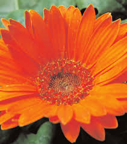 |
| Patch Plants | Gerbera - Orange | Gerbera | Outdoor Plant Delivered | Patch | 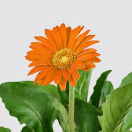 |
| Brandi Brewer - Account Receivable Specialist IV at Walmart Global Tech | LinkedIn | ||
| Vecteezy | Page 41 | Gerbera Daisy Nature Stock Photos, Images and Backgrounds for Free Download | |
| Freepik | Page 8 | Orange aster Photos - Download Free High-Quality Pictures | Freepik | |
| IndiaMART | Orange Gerbera Jamesonii Flower at ₹ 35/piece | Gerbera Flower in Mysore | ID: 14760118888 | |
| Etsy | Orange and Peach Flower Set 2 (extracted) - Etsy | |
| Macro photography class at Helms Garden Shop | ||
| TriniView.com | TriniView.com - dm1609078291.jpg | |
| Flickr | whoknows.crystal | Flickr | |
| Lee Orchid | Buy Gerbera Flowers – Vibrant and Cheerful | Lee Orchid |
{kind=link}
{kind=link}